Les 15 meilleurs restaurants de France en 2026
Trente et un restaurants triplement étoilés, 62 nouvelles étoiles décernées en mars 2026, un seul nouveau trois-étoiles, et une maison ouverte en avril 2025 qui décroche quatre toques dès son premier service. Voici les quinze tables qui résument l'année.
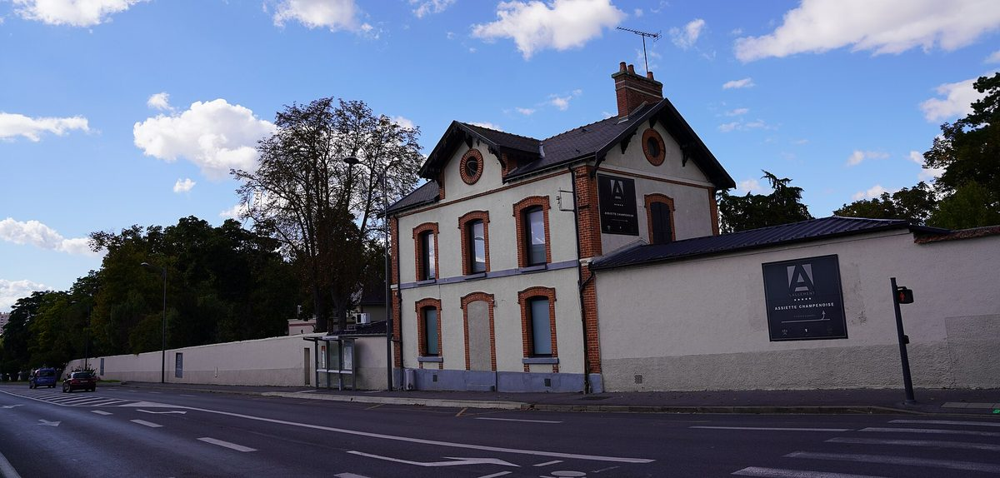
La gastronomie française n'a jamais été aussi dense, aussi disputée. Ce palmarès croise les scores de La Liste, les distinctions du Guide Michelin et celles de Gault&Millau avec nos propres critères éditoriaux, puis classe quinze maisons. Chaque rang est justifié par une distinction publiée, et chaque chiffre a été recoupé avant parution.
L'essentielCe qu'il faut retenir de 2026
- Une seule troisième étoile sur 62 nouvelles étoiles Michelin : Les Morainières, à Jongieux en Savoie, pour Michaël Arnoult.
- Guy Savoy reste premier mondial à La Liste avec 99,5 sur 100, pour la neuvième fois, alors qu'il n'a plus que deux étoiles Michelin depuis 2023.
- Quatre toques dès l'ouverture pour Prévelle, la première maison de Romain Meder, ouverte en avril 2025, étoilée dans la foulée en 2026.
- Trois générations, un même titre : César Troisgros est Cuisinier de l'Année Gault&Millau 2026, après son père en 2003 et son grand-père en 1987.
Notre méthode de sélection
Nous ne reproduisons pas les palmarès existants : nous les croisons, nous les interrogeons, et nous les complétons avec notre méthode de sélection. Quatre critères fondent chaque choix. L'excellence technique d'abord, mesurée par les notes de La Liste, du Michelin et de Gault&Millau. La singularité du projet culinaire ensuite : un chef qui a quelque chose à dire, pas seulement une technique à montrer. Le rapport entre l'expérience vécue et le prix payé. Enfin la capacité à incarner la gastronomie française de 2026, c'est-à-dire une cuisine ancrée dans un territoire, ouverte sur le monde, et honnête avec le convive.
Deux faits ont pesé plus lourd que les autres cette année.
Le premier concerne Prévelle. Romain Meder a ouvert son premier restaurant en nom propre en avril 2025, rue Saint-Dominique, dans le 7e arrondissement de Paris. Gault&Millau lui a attribué quatre toques dès l'ouverture, un cas que le guide qualifie lui-même de remarquable, et le Michelin a suivi avec une première étoile dans l'édition 2026.
Le second concerne Les Morainières. Sur les 62 nouvelles étoiles Michelin de 2026, une seule est une troisième étoile, celle de Michaël Arnoult à Jongieux, en Savoie. Pas deux, pas trois : une. Ce fait dit à lui seul le niveau d'exigence du guide au sommet, et l'exploit d'un chef discret installé dans un village viticole de l'Avant-Pays savoyard.
Les prix relevés sur le site officiel d'une maison sont publiés comme tels et datés. Les autres sont présentés comme un ordre de grandeur, et signalés ligne par ligne. Nous ne transformons pas une fourchette qui circule dans la presse en tarif vérifié : ces chiffres vieillissent vite et personne ne les corrige.
Le palmarès 2026
-
01
Guy Savoy
Paris 6e · Cuisine française contemporaine
2 étoiles Michelin99,5/100 à La Liste 20261er mondial, 9e fois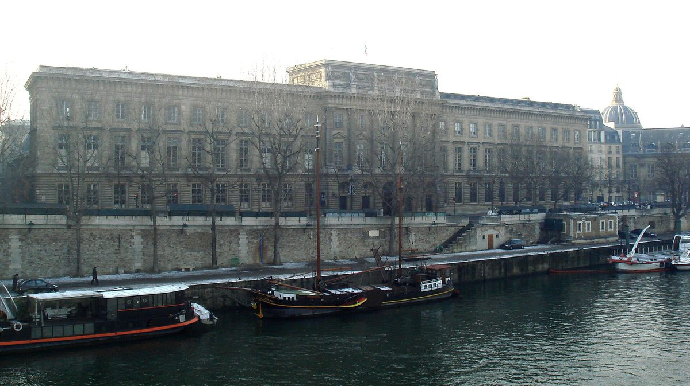
La Monnaie de Paris, quai de Conti, qui abrite le restaurant depuis 2015. Photo PHGCOM, CC BY-SA 3.0, via Wikimedia Commons. Neuf fois en tête de La Liste. Neuf. Ce chiffre dit presque tout sur la régularité de Guy Savoy, installé depuis 2015 dans les salons de la Monnaie de Paris, face à la Seine, avec le Pont Neuf et le Louvre en toile de fond. Le décor joue la sobriété moderne : tons ardoise, hauts plafonds, grandes fenêtres qui cadrent le fleuve comme une peinture. Une soixantaine de couverts seulement, ce qui confère à chaque service une intimité rare pour une table de ce rang.
La cuisine est une leçon de classicisme réinventé : soupe d'artichaut à la truffe noire, brioche feuilletée aux champignons, huîtres pochées glacées. On aime la précision absolue, la générosité sans esbroufe, le service qui sait se faire oublier. Ce qui peut décevoir : l'addition, vertigineuse, qui réserve cette expérience à une clientèle très ciblée.
Une précision que les classements recopient souvent de travers : la maison n'a plus trois étoiles au Michelin depuis 2023. Elle reste première mondiale à La Liste, et cet écart dit assez à quel point les deux méthodes ne mesurent pas la même chose.
Pour qui ? Les amateurs de haute cuisine française dans sa forme la plus aboutie, et ceux qui veulent comprendre pourquoi Paris reste une capitale de la gastronomie.
- Adresse11 quai de Conti, Paris 6e
- OuvertureDu mercredi au samedi
- Menus295 € au déjeuner, 760 € en dégustation
- RelevéSite officiel, 31 août 2026
-
02
Plénitude, Cheval Blanc Paris
Paris 1er · Cuisine française de haute couture
3 étoiles Michelin99,0/100 à La Liste 2026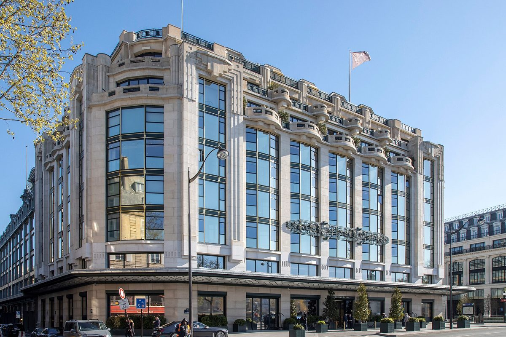
La Samaritaine, quai du Louvre : l'hôtel Cheval Blanc occupe l'aile qui donne sur la Seine. Photo Arthur Weidmann, CC BY-SA 4.0, via Wikimedia Commons. Arnaud Donckele est un phénomène. Cet homme dirige simultanément deux tables triplement étoilées, Plénitude à Paris et La Vague d'Or à Saint-Tropez, et maintient les deux au sommet. Plénitude, ouvert en 2021 dans l'hôtel Cheval Blanc, est peut-être son œuvre la plus aboutie. Le décor signé Peter Marino joue sur les textures et les matières nobles, avec une lumière tamisée qui donne l'impression d'être dans un écrin.
La cuisine d'Arnaud Donckele est une cuisine de l'émotion : sauces d'une complexité rare, produits d'exception traités avec une délicatesse presque chirurgicale, une capacité à raconter une histoire dans chaque assiette. On aime la cohérence absolue du projet, du verre de bienvenue aux mignardises. Ce qui peut décevoir : les menus uniques, sans alternative, qui supposent une confiance totale envers le chef.
Pour qui ? Les épicuriens qui veulent vivre une expérience entière, pas seulement un bon repas.
- AdresseHôtel Cheval Blanc, 8 quai du Louvre, Paris 1er
- MenusOrdre de grandeur : 445 à 480 €
- RéserveTarif non relevé sur le site officiel
-
03
Kei
Paris 1er · Dialogue franco-japonais
3 étoiles Michelin99,0/100 à La Liste 2026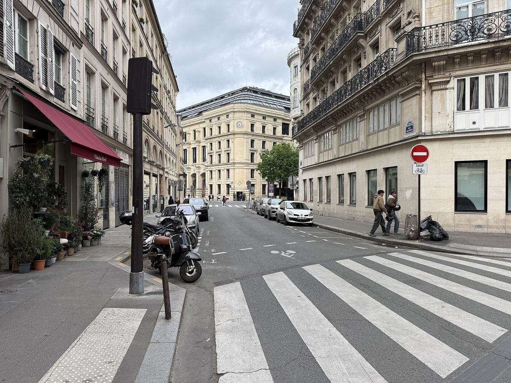
La rue du Coq-Héron, où Kei Kobayashi a installé sa table. Photo Chabe01, CC BY-SA 4.0, via Wikimedia Commons. Kei Kobayashi est arrivé du Japon avec une obsession : comprendre la cuisine française de l'intérieur pour mieux la réinventer. Trente ans plus tard, sa maison du 1er arrondissement est l'une des tables les plus singulières de Paris. Le décor est épuré, japonisant sans caricature, avec une lumière douce et des tables espacées qui invitent à la concentration.
La cuisine est un dialogue permanent entre deux cultures : technique française irréprochable, sensibilité japonaise dans le traitement des textures et des températures, produits français abordés par un chemin qui n'appartient qu'à lui. On aime la précision millimétrée, la façon dont chaque plat surprend sans déstabiliser. Ce qui peut décevoir : une atmosphère parfois formelle, qui manque de chaleur spontanée.
Pour qui ? Les curieux qui veulent comprendre ce que la rencontre franco-japonaise produit au plus haut niveau.
- Adresse5 rue du Coq-Héron, Paris 1er
- OuvertureDu mardi au samedi, déjeuner les vendredi et samedi
- MenusNon communiqués sur le site officiel
- RéservationOuverte deux mois à l'avance, le premier mardi du mois
-
04
La Vague d'Or, Cheval Blanc St-Tropez
Saint-Tropez (Var) · Cuisine méditerranéenne de haute couture
3 étoiles Michelin99,0/100 à La Liste 2026La Vague d'Or est l'autre maison d'Arnaud Donckele, et elle n'a rien à envier à Plénitude. Installée dans l'hôtel Cheval Blanc de Saint-Tropez, face à la mer, elle incarne ce que la gastronomie provençale atteint quand elle est portée par un chef de ce calibre. Le décor est solaire, en tons crème et sable, et la terrasse compte parmi les plus belles de France.
La cuisine joue la Méditerranée à fond : herbes fraîches, poissons de roche, légumes du marché, sauces qui sentent le romarin et le thym. On aime la générosité provençale qui transparaît malgré la sophistication extrême. Ce qui peut décevoir : la saisonnalité, la table n'ouvrant qu'une partie de l'année.
Pour qui ? Les amoureux de la Côte d'Azur qui veulent la Provence gastronomique dans sa version la plus aboutie.
- AdresseCheval Blanc St-Tropez, plage de la Bouillabaisse, Saint-Tropez
- OuvertureSaisonnière
- MenusOrdre de grandeur : 445 à 490 €
- RéserveTarif non relevé sur le site officiel
-
05
Régis & Jacques Marcon
Saint-Bonnet-le-Froid (Haute-Loire) · Champignons et terroir auvergnat
3 étoiles Michelin99,0/100 à La Liste 2026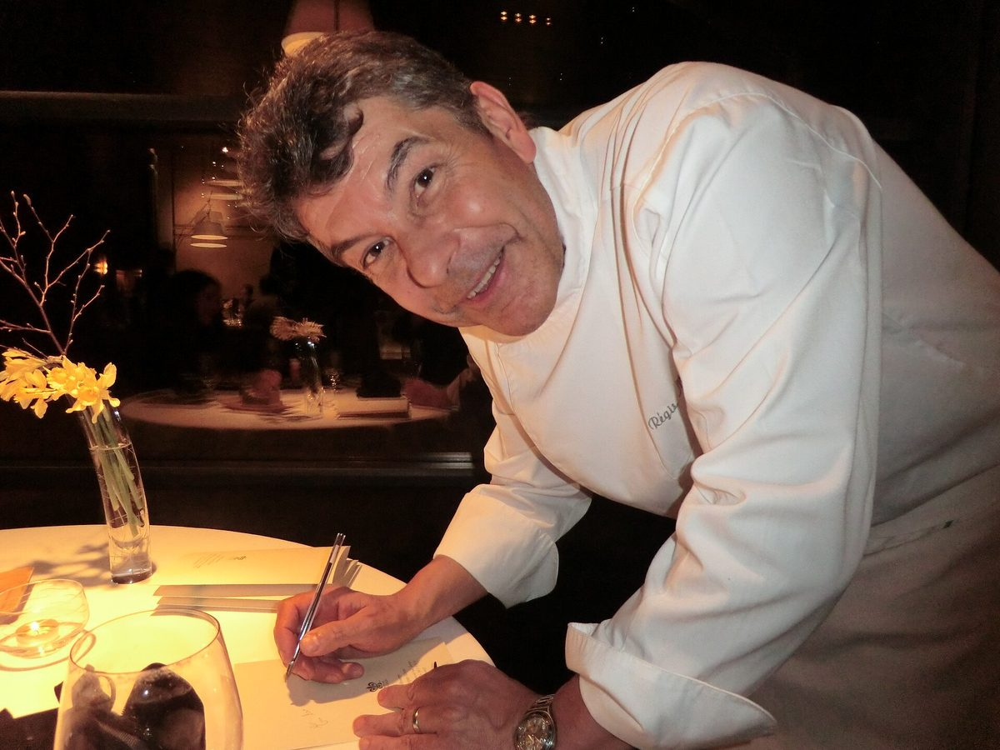
Régis Marcon, qui cuisine à Saint-Bonnet-le-Froid depuis plus de quarante ans. Photo Benoît Prieur, CC0, via Wikimedia Commons. Il faut le vouloir pour aller à Saint-Bonnet-le-Froid. Ce village de la Haute-Loire, perché à plus de mille mètres, n'est sur aucune route touristique. Des gourmands du monde entier font pourtant le détour pour la table de Régis et Jacques Marcon. Le décor est à l'image du lieu : sobre, ancré dans la montagne, avec des matériaux locaux et une vue sur les crêtes.
La cuisine est une déclaration d'amour au terroir. Les champignons, cèpes, morilles, trompettes, y sont traités comme nulle part ailleurs, avec une maîtrise qui est la signature de la maison. À côté d'eux : la lentille verte du Puy, l'omble chevalier, l'agneau en croûte de foin. On aime l'humilité du projet et la cohérence entre le lieu et l'assiette. Ce qui peut décevoir : l'éloignement, qui impose une organisation.
Régis Marcon a été rejoint par son fils Jacques en 2004, puis par Paul. La maison ne fixe pas de menu figé : les recettes changent chaque semaine, au gré des cueillettes.
Pour qui ? Les amoureux du terroir français dans ce qu'il a de plus authentique.
- AdresseLarsiallas, 43290 Saint-Bonnet-le-Froid
- CuisineChampignons, lentille verte du Puy, poissons de rivière
- Menu180 €, service et taxes compris
- Téléphone04 71 59 93 72
-
06
L'Assiette Champenoise
Tinqueux (Marne) · Cuisine champenoise contemporaine
3 étoiles Michelin99,0/100 à La Liste 2026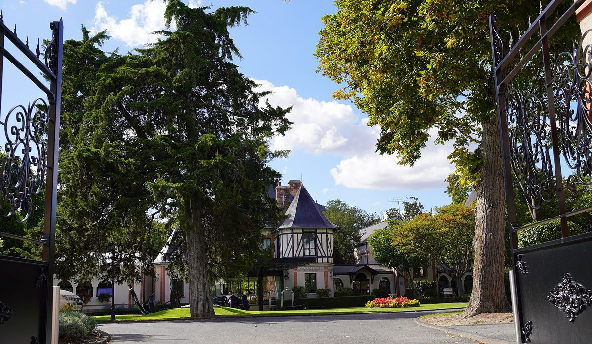
L'entrée du parc de L'Assiette Champenoise et son pavillon à colombages, à Tinqueux. Photo G.Garitan, CC BY-SA 4.0, via Wikimedia Commons. À deux pas de Reims, dans la commune de Tinqueux, Arnaud Lallement a transformé l'hôtel-restaurant familial en l'une des tables les plus régulières de France. Le décor est élégant sans ostentation : tonalités claires, espaces bien pensés, terrasse agréable aux beaux jours.
La cuisine d'Arnaud Lallement est une cuisine de la précision : produits champenois et régionaux traités avec une technique irréprochable, et des accords mets et champagnes parmi les plus aboutis du pays, ce qui n'a rien d'un hasard vu la proximité des grandes maisons rémoises. On aime la constance absolue, qui ne cherche pas à épater mais à convaincre repas après repas. Ce qui peut décevoir : un style parfois jugé trop sage.
Pour qui ? Les amateurs de cuisine classique bien exécutée, et les passionnés de champagne qui veulent explorer les accords à leur meilleur niveau.
- Adresse40 avenue Paul Vaillant-Couturier, Tinqueux (51)
- MenusOrdre de grandeur : environ 208 €
- RéserveTarif non relevé sur le site officiel
-
07
Maison Pic
Valence (Drôme) · Cuisine française de caractère
3 étoiles Michelin99,0/100 à La Liste 2026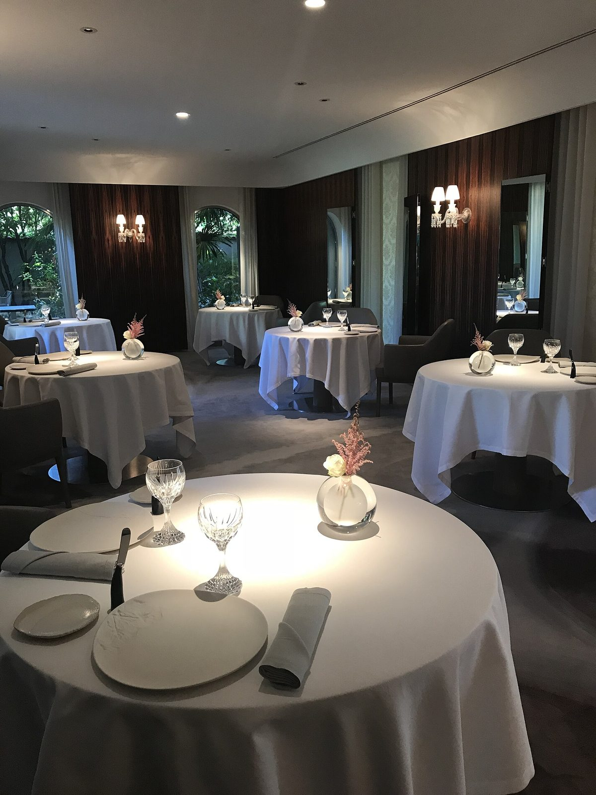
Une des salles de Maison Pic, à Valence. Photo Benoît Prieur, CC0, via Wikimedia Commons. Anne-Sophie Pic est la seule femme chef triplement étoilée en France. Le fait mériterait qu'on s'y arrête, mais ce serait réducteur : Maison Pic vaut bien plus que son histoire. La maison familiale de Valence, transmise depuis André Pic, est aujourd'hui un écrin de raffinement, décor contemporain et chaleureux, jardins soignés, atmosphère qui mêle l'héritage et la modernité.
La cuisine d'Anne-Sophie Pic est une cuisine des parfums et des associations inattendues. Elle travaille les arômes comme une parfumeuse et construit des plats qui surprennent par leur complexité olfactive autant que gustative. On aime l'audace, la façon dont elle réinvente les classiques sans les trahir. Ce qui peut décevoir : certains plats très construits, qui peuvent sembler intellectuels au détriment de l'émotion immédiate.
Pour qui ? Les curieux de gastronomie française qui veulent une expérience hors des sentiers battus.
- Adresse285 avenue Victor Hugo, Valence (26)
- MenusOrdre de grandeur : 200 à 380 €
- RéserveTarif non relevé sur le site officiel
-
08
L'Oustau de Baumanière
Les Baux-de-Provence (Bouches-du-Rhône) · Cuisine provençale de haute couture
3 étoiles Michelin99,0/100 à La Liste 2026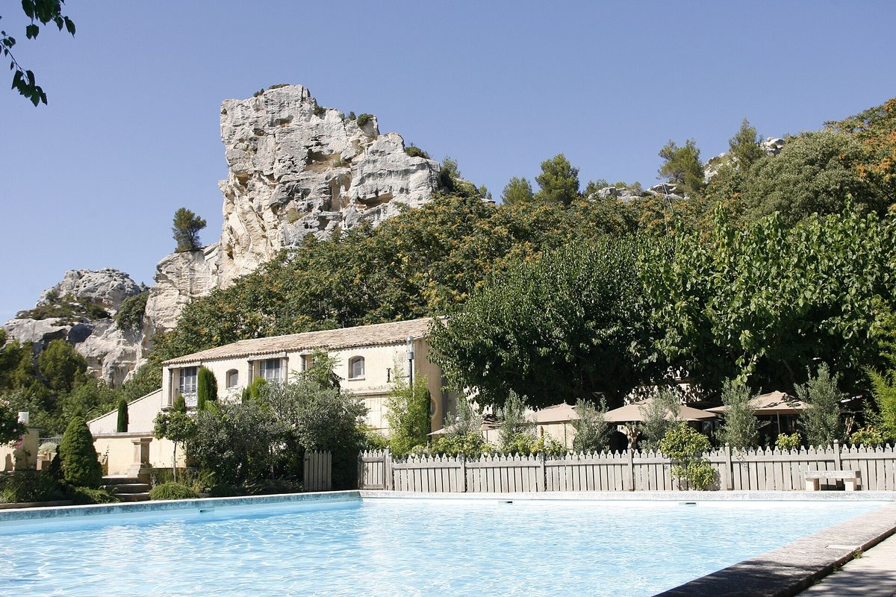
Le mas et la piscine de Baumanière, au pied des rochers des Baux. Photo Baumaniere, CC BY-SA 4.0, via Wikimedia Commons. Les Baux-de-Provence, village perché dans les Alpilles, offre l'un des plus beaux cadres gastronomiques de France. L'Oustau de Baumanière en tire le meilleur parti : mas provençal du XVIe siècle, terrasse ombragée de platanes centenaires, vue sur les rochers.
Glenn Viel, chef depuis 2015, a redonné à cette maison historique une énergie contemporaine sans trahir l'âme du lieu. Sa cuisine est provençale par les produits, légumes du potager maison, herbes sauvages, huile d'olive locale, et moderne par les techniques. On aime la cohérence entre le lieu, la cuisine et l'expérience, qui fait de Baumanière un séjour autant qu'un repas. Ce qui peut décevoir : le prix de l'hébergement, qui alourdit vite la note globale.
Pour qui ? Les amoureux de la Provence qui veulent l'expérience complète, de la table à la chambre.
- AdresseRoute de Maussane, Les Baux-de-Provence (13)
- MenusOrdre de grandeur : 200 à 350 €
- RéserveTarif non relevé sur le site officiel
-
09
Le Pré Catelan
Paris 16e · Cuisine française classique revisitée
3 étoiles Michelin99,0/100 à La Liste 2026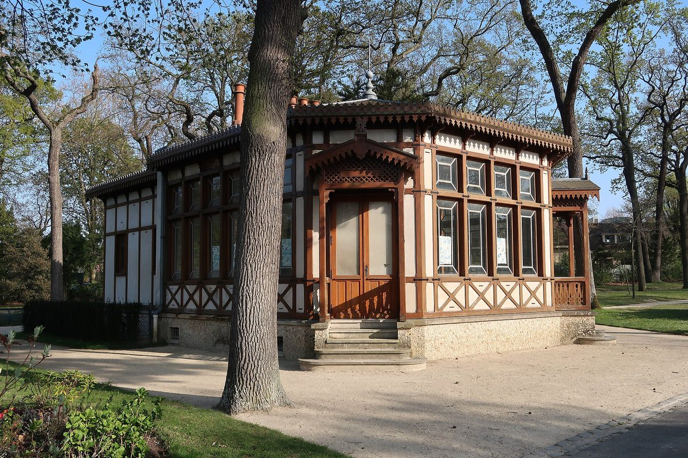
Le jardin du Pré-Catelan, dans le bois de Boulogne, qui entoure le pavillon. Photo Polymagou, CC BY-SA 4.0, via Wikimedia Commons. Au cœur du bois de Boulogne, dans un pavillon Napoléon III entouré de verdure, Le Pré Catelan est l'une des adresses les plus romanesques de Paris. Frédéric Anton, chef depuis 1997, en a fait un sanctuaire de la cuisine française classique portée à son plus haut niveau de précision. Le décor est somptueux : boiseries, lustres, nappes blanches, et cette lumière filtrée par les arbres qui donne à chaque service une atmosphère presque irréelle.
La cuisine de Frédéric Anton est une cuisine de la maîtrise : produits d'exception, techniques irréprochables, présentation soignée jusqu'au détail. On aime la régularité sans faille, la façon dont chaque plat semble avoir été pensé et repensé. Ce qui peut décevoir : une certaine froideur de l'atmosphère, qui peut manquer de spontanéité.
Pour qui ? Les amateurs de grande cuisine française classique dans un cadre exceptionnel.
- AdresseRoute de Suresnes, bois de Boulogne, Paris 16e
- MenusOrdre de grandeur : 180 à 340 €
- RéserveTarif non relevé sur le site officiel
-
10
Troisgros, Le Bois sans Feuilles
Ouches (Loire) · Cuisine française de terroir
3 étoiles MichelinCuisinier de l'Année Gault&Millau 20264 toques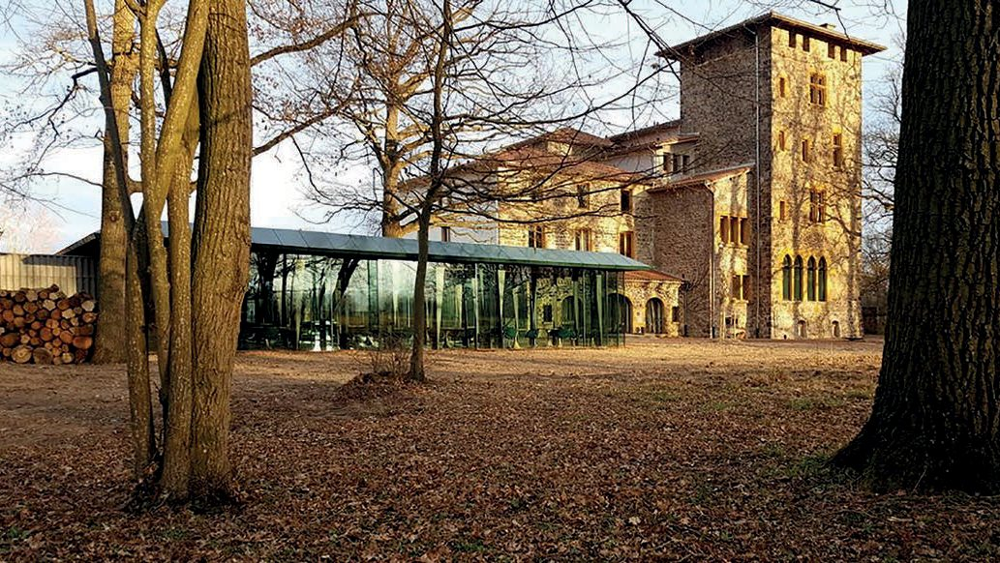
La salle vitrée du Bois sans Feuilles et le manoir, à Ouches, vus du parc. Photo Troisgros fanny, CC BY-SA 4.0, via Wikimedia Commons. César Troisgros est Cuisinier de l'Année 2026 pour Gault&Millau. Son père Michel l'avait été en 2003, son grand-père Pierre en 1987. Trois générations, trois titres : le guide relève qu'aucune discipline ne compte de grand-père, père et fils lauréats du même prix.
Le Bois sans Feuilles, à Ouches, est la table de César : un restaurant posé dans un domaine boisé, avec une architecture contemporaine qui dialogue avec la nature. La cuisine est une cuisine de la liberté, ancrée dans le terroir ligérien, ouverte aux influences internationales, portée par une technique héritée mais jamais figée. On aime l'énergie d'un chef qui assume son héritage tout en traçant sa voie. Ce qui peut décevoir : l'éloignement, qui impose un vrai voyage.
Pour qui ? Les passionnés qui veulent comprendre comment une famille réinvente son propre classicisme.
- AdresseLe Bois sans Feuilles, Ouches (42)
- MenusOrdre de grandeur : 200 à 320 €
- RéserveTarif non relevé sur le site officiel
-
11
Les Morainières
Jongieux (Savoie) · Cuisine savoyarde de haute précision
3 étoiles MichelinSeul nouveau 3 étoiles 2026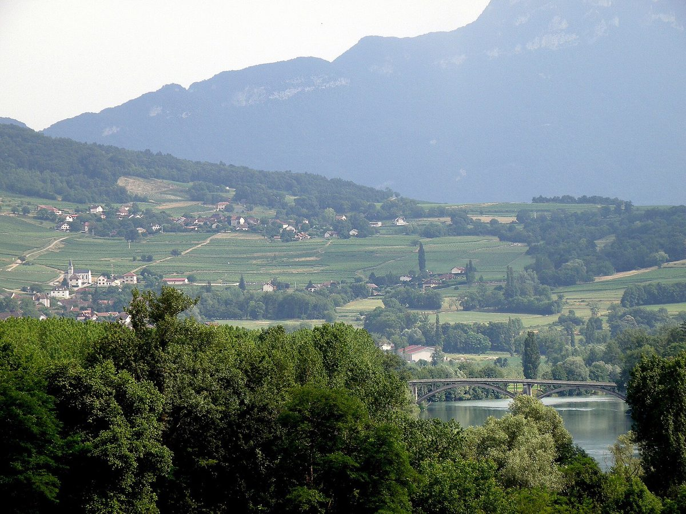
Jongieux et son vignoble, en Savoie : le restaurant domine les vignes. Photo Torsade de Pointes, CC0, via Wikimedia Commons. Sur 62 nouvelles étoiles Michelin décernées en 2026, une seule est une troisième étoile. Une. Elle est allée à Michaël Arnoult, chef discret installé à Jongieux, au-dessus du lac du Bourget, dans un cadre savoyard d'une beauté tranquille. Une progression patiente, sans coup d'éclat médiatique : juste la cuisine.
Le décor est à l'image du chef, sobre, élégant, ancré dans le paysage, avec des matériaux locaux et une vue sur les vignes. La maison est installée dans une ancienne cave de pierre, ouverte en 2005. La cuisine de Michaël Arnoult, accompagné d'Ingrid Arnoult en salle, est une cuisine du territoire : poissons du lac, légumes des jardins voisins, fromages savoyards, vins de Jongieux. On aime l'humilité du projet et ce sentiment rare d'être dans un endroit qui n'existe que pour la cuisine. Ce qui peut décevoir : l'accès, qui nécessite une voiture et un vrai détour.
Pour qui ? Tous ceux qui croient encore que les plus grandes tables de France ne sont pas toutes à Paris.
- Adresse1400 route de Marestel, 73170 Jongieux
- MenusDécouverte 220 €, Expérience 280 €
- DistinctionTroisième étoile obtenue le 16 mars 2026
-
12
Prévelle
Paris 7e · Cuisine végétale et de saison
1 étoile Michelin 20264 toques Gault&Millau dès l'ouverture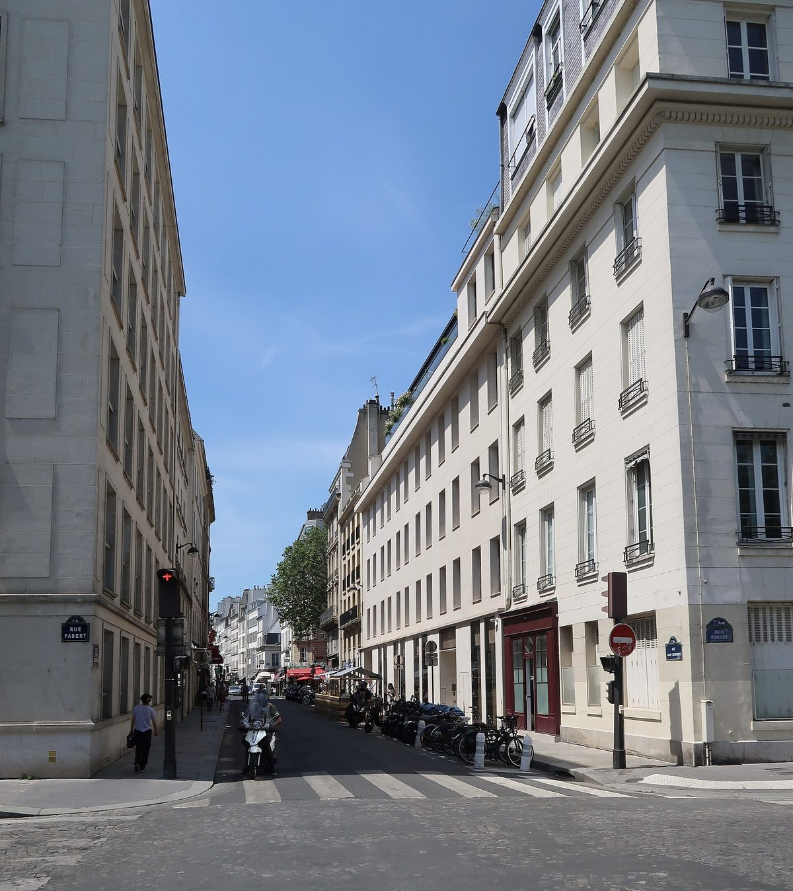
La rue Saint-Dominique, où Romain Meder a ouvert sa première maison. Photo Polymagou, CC BY-SA 4.0, via Wikimedia Commons. Romain Meder a passé plus de quinze ans aux côtés d'Alain Ducasse avant d'ouvrir son premier restaurant en nom propre, en avril 2025, rue Saint-Dominique. Résultat immédiat : quatre toques Gault&Millau, un niveau de reconnaissance que les nouvelles maisons atteignent rarement dès leur premier service. Moins d'un an plus tard, le Michelin lui accordait une première étoile, dans l'édition 2026.
Le décor est à l'image de la cuisine, épuré, naturel, matériaux bruts et lumière douce qui met l'assiette en valeur sans artifice. La cuisine de Romain Meder est une cuisine du végétal et de la saison : les légumes sont au centre, complétés de volailles, de poissons et de coquillages, avec des produits largement franciliens. On aime l'honnêteté du projet et des prix qui restent tenables pour ce niveau. Ce qui peut décevoir : une salle petite, des réservations difficiles à obtenir.
Pour qui ? Les curieux de cuisine végétale gastronomique, et ceux qui cherchent la prochaine grande table parisienne.
- Adresse34 rue Saint-Dominique, Paris 7e
- OuvertureDéjeuner du mardi au vendredi, dîner du lundi au vendredi
- MenusDéjeuner 65 € et 85 €, dégustation 145 € et 165 €
- RelevéTarifs 2026 publiés par la maison
-
13
Alléno Paris au Pavillon Ledoyen
Paris 8e · Cuisine française contemporaine
3 étoiles Michelin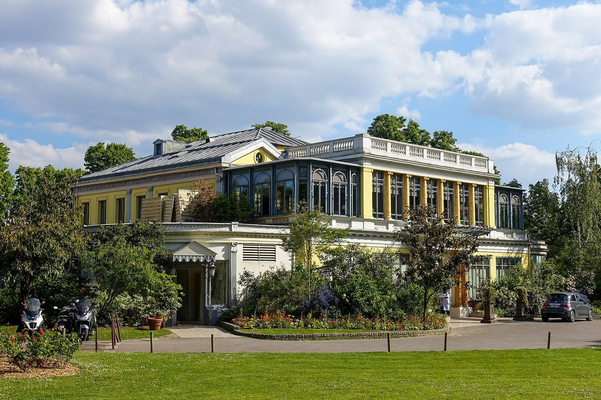
Le Pavillon Ledoyen, dans les jardins des Champs-Élysées. Photo Guilhem Vellut from Paris, France, CC BY 2.0, via Wikimedia Commons. Yannick Alléno est l'un des chefs les plus prolifiques de la gastronomie française, et l'un des plus discutés. Prolifique parce qu'il dirige des tables dans le monde entier. Discuté parce que cette omniprésence interroge sur la notion de présence réelle en cuisine. Au Pavillon Ledoyen, pavillon historique des Champs-Élysées, la maison tient pourtant son rang.
Le décor est somptueux : salons clairs, hauts plafonds, une vue sur les jardins qui compte parmi les plus belles de Paris. La cuisine d'Alléno est une cuisine de la sauce et de l'extraction : il a développé une technique d'extraction à froid qui concentre les saveurs avec une intensité inhabituelle. On aime la puissance des goûts et l'ambition du projet. Ce qui peut décevoir : une certaine froideur de l'atmosphère, et des tarifs parmi les plus élevés de la capitale.
Pour qui ? Les amateurs de grande cuisine française qui veulent comprendre où va la technique culinaire contemporaine.
- Adresse8 avenue Dutuit, Paris 8e
- MenusOrdre de grandeur : 380 à 520 €
- RéserveTarif non relevé sur le site officiel
-
14
Alliance
Paris 5e · Cuisine franco-japonaise
2 étoiles Michelin 2026Nouvelle promotionLa rue de Poissy, dans le 5e, où Alliance est installé depuis 2015. Photo Chabe01, CC BY-SA 4.0, via Wikimedia Commons. Alliance est peut-être la révélation de ce palmarès. Fondée en 2015 par Toshitaka Omiya et Shawn Joyeux, rue de Poissy, cette maison discrète a décroché sa deuxième étoile dans l'édition 2026, aux côtés de Hakuba et de Virtus.
Le décor est minimaliste, presque austère, tables en bois clair et lumière naturelle généreuse. La cuisine de Toshitaka Omiya est une cuisine de la sincérité : produits français travaillés avec une sensibilité japonaise, textures soignées, saveurs nettes. On aime l'absence de posture, la façon dont chaque plat dit quelque chose sans chercher à impressionner. Ce qui peut décevoir : la petite salle, et des réservations qui s'arrachent depuis la promotion.
Pour qui ? Les amateurs de cuisine gastronomique sans chichi, ceux qui préfèrent l'émotion à la démonstration.
- Adresse5 rue de Poissy, Paris 5e
- MenusOrdre de grandeur : 90 à 180 €
- RéserveTarif non relevé sur le site officiel
-
15
Arbane
Reims (Marne) · Cuisine champenoise créative
2 étoiles Michelin 20264 toques Gault&Millau 2026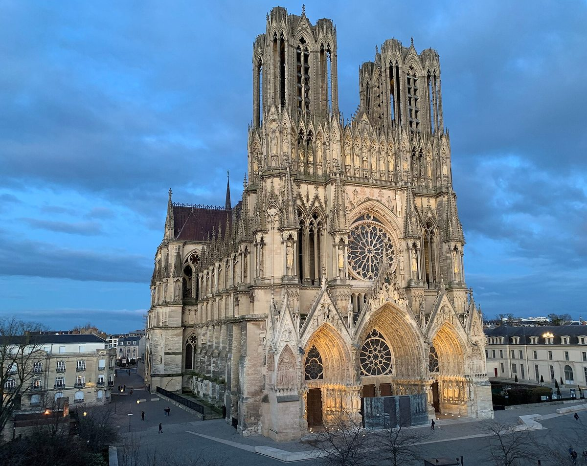
Reims, où Philippe Mille a ouvert Arbane en 2024 après quinze ans aux Crayères. Photo Tontonflingueur, CC BY-SA 4.0, via Wikimedia Commons. Philippe Mille a ouvert Arbane au printemps 2024, à Reims, et la reconnaissance est venue vite : deuxième étoile Michelin en 2026, quatre toques Gault&Millau la même année. C'est la seule maison de l'année à cumuler ces deux distinctions sur la même édition.
Le restaurant, rue Noël, occupe un ancien hôtel particulier entièrement repensé, avec une esthétique contemporaine et des références discrètes au vignoble : Arbane est le nom d'un cépage rare de Champagne. Meilleur Ouvrier de France en 2011, passé par Lasserre, Le Meurice, le Ritz et Le Pré Catelan avant quinze années aux Crayères, Philippe Mille signe une cuisine de la région, produits champenois, champignons, poissons de rivière, légumes locaux, avec une créativité qui ne sacrifie jamais la lisibilité.
Pour qui ? Les épicuriens qui aiment découvrir les grandes tables avant tout le monde.
- Adresse7 rue Noël, 51100 Reims
- Téléphone03 26 89 60 70
- MenusOrdre de grandeur : 120 à 220 €
- RéserveTarif non relevé sur le site officiel
Les tendances de la table française en 2026
Le végétal au centre de l'assiette
Ce n'est plus une tendance de niche. En 2026, la cuisine végétale a gagné les plus grandes tables françaises. Prévelle en est l'exemple le plus frappant, quatre toques et une étoile pour une carte centrée sur les légumes, mais la dynamique est plus large : les maisons triplement étoilées proposent désormais des menus végétaux qui ne sont plus des options de repli. Les légumes y sont travaillés en textures, en températures, en fermentations, avec l'attention réservée hier aux viandes et aux poissons. Alain Passard a ouvert cette voie il y a vingt ans ; elle est devenue une autoroute.
Local, saisonnier, traçable
La saisonnalité n'est plus un argument, c'est une exigence que les convives vérifient. Les maisons de ce palmarès affichent leurs producteurs, leurs circuits courts, leurs potagers. Régis et Jacques Marcon avec les champignons d'Auvergne et la lentille verte du Puy, Glenn Viel avec le potager des Alpilles, Michaël Arnoult avec les poissons du lac du Bourget et les vins de Jongieux : la traçabilité est devenue une composante de l'excellence, notée par les guides et demandée par les clients.
Le retour des sauces
Paradoxalement, alors que le végétal et les techniques modernes progressent, les classiques reviennent en force. Les sauces, longtemps délaissées au profit des jus et des émulsions, sont de nouveau un terrain de démonstration. Yannick Alléno en a fait sa signature avec ses extractions à froid, Arnaud Donckele en a fait le cœur de son travail à Plénitude comme à La Vague d'Or. Le message est net : la gastronomie française n'a pas besoin de se réinventer en permanence, elle a besoin de se souvenir de ce qu'elle sait faire.
Le repas comme expérience
Réserver dans une grande maison, en 2026, c'est acheter davantage qu'un repas. Le décor, la lumière, le service, le récit autour des plats : tout compte, et tout est jugé. Plénitude au Cheval Blanc, L'Oustau de Baumanière dans les Alpilles, Le Pré Catelan dans le bois de Boulogne proposent une immersion complète dans un univers. C'est aussi ce qui rend la comparaison des guides difficile : une table peut exceller à l'assiette et décevoir sur tout le reste.
Ce que ces trois palmarès racontent de 2026
Le premier enseignement tient dans un chiffre : une seule troisième étoile sur 62 promotions. Michelin distingue largement à l'entrée du classement, cinquante-quatre premières étoiles, et presque plus au sommet. La rareté est le message.
Le deuxième tient dans un nom : Prévelle. Quatre toques dès l'ouverture bousculent l'idée qu'une reconnaissance se construit sur des années. Gault&Millau a jugé une maison sur ce qu'elle servait, pas sur son ancienneté.
Le troisième tient dans un écart. Guy Savoy est premier mondial à La Liste et deux-étoiles au Michelin. Deux classements de référence, deux verdicts opposés sur la même maison, la même année. C'est la meilleure raison de lire plusieurs guides plutôt qu'un seul.
Lyon tient son propre système, avec ses bouchons et ses deux labels concurrents : notre guide des 10 meilleurs bouchons lyonnais explique lequel veut dire quoi, et pourquoi les maisons les plus recommandées n'en portent souvent aucun.
Sur un registre plus matinal et nettement plus abordable, notre guide du meilleur brunch à Paris passe douze maisons au crible, adresse par adresse et tarif par tarif.
À l'échelle de la capitale, le même exercice donne les 25 meilleures tables de Paris en 2026, où une grande maison vient de perdre sa troisième étoile.
Questions fréquentes
Quels sont les meilleurs restaurants de France en 2026 ?
En tête de notre palmarès 2026 : Guy Savoy à Paris, premier mondial à La Liste avec 99,5 sur 100 pour la neuvième fois ; Plénitude au Cheval Blanc Paris, d'Arnaud Donckele ; Kei, la table franco-japonaise de Kei Kobayashi ; La Vague d'Or à Saint-Tropez, l'autre maison d'Arnaud Donckele ; et Régis & Jacques Marcon à Saint-Bonnet-le-Froid. Notre classement croise La Liste, le Guide Michelin et Gault&Millau avec nos propres critères éditoriaux.
Quel est le seul nouveau restaurant 3 étoiles Michelin en France en 2026 ?
Les Morainières, à Jongieux en Savoie, dirigé par Michaël Arnoult. Sur les 62 restaurants nouvellement étoilés lors de la cérémonie du 16 mars 2026, un seul a obtenu la troisième étoile ; sept ont obtenu la deuxième et cinquante-quatre la première. La France compte 668 restaurants étoilés, dont 31 triplement étoilés.
Où manger dans un restaurant étoilé en France sans dépenser plus de 200 € ?
Plusieurs tables de ce palmarès restent sous ce seuil. Prévelle, à Paris, propose un déjeuner à 65 € et 85 €, et une dégustation à 145 € et 165 €. Régis & Jacques Marcon sert un menu unique à 180 €. Les Morainières commencent à 220 €, et Arbane à Reims se situe autour de 120 €. Ces tables montrent qu'un étoilé n'implique pas nécessairement une addition à 400 € par personne.
Guy Savoy a-t-il trois étoiles Michelin ?
Non. Le restaurant Guy Savoy, à la Monnaie de Paris, a perdu sa troisième étoile en 2023 et en compte deux depuis. Il reste en revanche premier au classement mondial de La Liste, avec 99,5 sur 100 dans l'édition 2026, pour la neuvième fois. Cet écart entre deux classements de référence sur une même maison est l'un des enseignements de l'année.
Qui est le Cuisinier de l'Année Gault&Millau 2026 ?
César Troisgros, pour Le Bois sans Feuilles à Ouches, dans la Loire. La distinction a été annoncée le 17 novembre 2025. Son grand-père Pierre l'avait reçue en 1987 et son père Michel en 2003 : le guide relève qu'aucune discipline ne compte de grand-père, père et fils lauréats du même prix.
Quel palmarès gastronomique fait référence en France ?
Trois guides font référence : le Guide Michelin, qui attribue de une à trois étoiles ; Gault&Millau, qui attribue de une à cinq toques ; et La Liste, qui publie un score sur 100 et un classement mondial. Leurs critères diffèrent et leurs verdicts peuvent diverger fortement, comme le montre le cas de Guy Savoy. Notre palmarès croise les trois sources avec nos propres critères.
Pourquoi certains tarifs ne sont-ils pas publiés ?
Parce que nous ne les avons pas relevés à la source. Notre règle est de ne publier un tarif comme vérifié que s'il figure sur le site officiel de l'établissement. Quand ce n'est pas le cas, la fourchette est présentée comme un ordre de grandeur, et signalée comme telle. Les tarifs sont complétés maison par maison, à mesure des vérifications.
Sources
Les classements cités ont été consultés directement. Les liens ci-dessous ouvrent les pages sur lesquelles les chiffres de cet article ont été relevés.
- La Liste 2026, le palmarès, scores sur 100 et rang mondial.
- Gault&Millau, César Troisgros Cuisinier de l'Année 2026, et les millésimes 1987 et 2003.
- Gault&Millau, les nouvelles tables 4 toques 2026, dont Prévelle et Arbane.
- Guide Michelin France et Monaco 2026, palmarès officiel.
- Restaurant Guy Savoy, menus et horaires relevés le 31 août 2026.
- Prévelle, menus 2026 publiés par la maison.
- Les Morainières, adresse et menus.
Une première version de cet article annonçait Guy Savoy à trois étoiles Michelin, puis a daté de 2026 la perte de sa troisième étoile. Les deux mentions étaient inexactes : la maison a été rétrogradée à deux étoiles en 2023, et le reste depuis. Son score à La Liste, lui, est inchangé. La rétrogradation intervenue dans l'édition 2026 concerne L'Ambroisie, à Paris, citée dans notre palmarès parisien.
Une erreur dans ces chiffres, une distinction oubliée, un tarif à jour : signalez-le nous. Les corrections sont datées sur la page.
Aucune des maisons citées dans cet article n'a été visitée par la rédaction à ce jour. Les notes sur 20 de notre grille viendront avec nos visites.